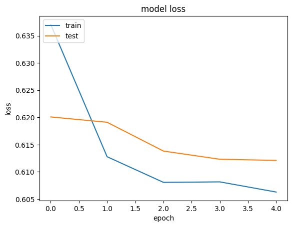

Collaborative Filtering for Movie Recommendations
Author: Siddhartha Banerjee
Date created: 2020/05/24
Last modified: 2020/05/24
Description: Recommending movies using a model trained on Movielens dataset.

Introduction
This example demonstrates Collaborative filtering using the Movielens dataset to recommend movies to users. The MovieLens ratings dataset lists the ratings given by a set of users to a set of movies. Our goal is to be able to predict ratings for movies a user has not yet watched. The movies with the highest predicted ratings can then be recommended to the user.
The steps in the model are as follows:
- Map user ID to a "user vector" via an embedding matrix
- Map movie ID to a "movie vector" via an embedding matrix
- Compute the dot product between the user vector and movie vector, to obtain the a match score between the user and the movie (predicted rating).
- Train the embeddings via gradient descent using all known user-movie pairs.
References:
import pandas as pd
from pathlib import Path
import matplotlib.pyplot as plt
import numpy as np
from zipfile import ZipFile
import keras
from keras import layers
from keras import ops
First, load the data and apply preprocessing
# Download the actual data from http://files.grouplens.org/datasets/movielens/ml-latest-small.zip"
# Use the ratings.csv file
movielens_data_file_url = (
"http://files.grouplens.org/datasets/movielens/ml-latest-small.zip"
)
movielens_zipped_file = keras.utils.get_file(
"ml-latest-small.zip", movielens_data_file_url, extract=False
)
keras_datasets_path = Path(movielens_zipped_file).parents[0]
movielens_dir = keras_datasets_path / "ml-latest-small"
# Only extract the data the first time the script is run.
if not movielens_dir.exists():
with ZipFile(movielens_zipped_file, "r") as zip:
# Extract files
print("Extracting all the files now...")
zip.extractall(path=keras_datasets_path)
print("Done!")
ratings_file = movielens_dir / "ratings.csv"
df = pd.read_csv(ratings_file)
Downloading data from http://files.grouplens.org/datasets/movielens/ml-latest-small.zip
978202/978202 ━━━━━━━━━━━━━━━━━━━━ 0s 0us/step
Extracting all the files now...
Done!
First, need to perform some preprocessing to encode users and movies as integer indices.
user_ids = df["userId"].unique().tolist()
user2user_encoded = {x: i for i, x in enumerate(user_ids)}
userencoded2user = {i: x for i, x in enumerate(user_ids)}
movie_ids = df["movieId"].unique().tolist()
movie2movie_encoded = {x: i for i, x in enumerate(movie_ids)}
movie_encoded2movie = {i: x for i, x in enumerate(movie_ids)}
df["user"] = df["userId"].map(user2user_encoded)
df["movie"] = df["movieId"].map(movie2movie_encoded)
num_users = len(user2user_encoded)
num_movies = len(movie_encoded2movie)
df["rating"] = df["rating"].values.astype(np.float32)
# min and max ratings will be used to normalize the ratings later
min_rating = min(df["rating"])
max_rating = max(df["rating"])
print(
"Number of users: {}, Number of Movies: {}, Min rating: {}, Max rating: {}".format(
num_users, num_movies, min_rating, max_rating
)
)
Number of users: 610, Number of Movies: 9724, Min rating: 0.5, Max rating: 5.0
Prepare training and validation data
df = df.sample(frac=1, random_state=42)
x = df[["user", "movie"]].values
# Normalize the targets between 0 and 1. Makes it easy to train.
y = df["rating"].apply(lambda x: (x - min_rating) / (max_rating - min_rating)).values
# Assuming training on 90% of the data and validating on 10%.
train_indices = int(0.9 * df.shape[0])
x_train, x_val, y_train, y_val = (
x[:train_indices],
x[train_indices:],
y[:train_indices],
y[train_indices:],
)
Create the model
We embed both users and movies in to 50-dimensional vectors.
The model computes a match score between user and movie embeddings via a dot product,
and adds a per-movie and per-user bias. The match score is scaled to the [0, 1]
interval via a sigmoid (since our ratings are normalized to this range).
EMBEDDING_SIZE = 50
class RecommenderNet(keras.Model):
def __init__(self, num_users, num_movies, embedding_size, **kwargs):
super().__init__(**kwargs)
self.num_users = num_users
self.num_movies = num_movies
self.embedding_size = embedding_size
self.user_embedding = layers.Embedding(
num_users,
embedding_size,
embeddings_initializer="he_normal",
embeddings_regularizer=keras.regularizers.l2(1e-6),
)
self.user_bias = layers.Embedding(num_users, 1)
self.movie_embedding = layers.Embedding(
num_movies,
embedding_size,
embeddings_initializer="he_normal",
embeddings_regularizer=keras.regularizers.l2(1e-6),
)
self.movie_bias = layers.Embedding(num_movies, 1)
def call(self, inputs):
user_vector = self.user_embedding(inputs[:, 0])
user_bias = self.user_bias(inputs[:, 0])
movie_vector = self.movie_embedding(inputs[:, 1])
movie_bias = self.movie_bias(inputs[:, 1])
dot_user_movie = ops.tensordot(user_vector, movie_vector, 2)
# Add all the components (including bias)
x = dot_user_movie + user_bias + movie_bias
# The sigmoid activation forces the rating to between 0 and 1
return ops.nn.sigmoid(x)
model = RecommenderNet(num_users, num_movies, EMBEDDING_SIZE)
model.compile(
loss=keras.losses.BinaryCrossentropy(),
optimizer=keras.optimizers.Adam(learning_rate=0.001),
)
Train the model based on the data split
history = model.fit(
x=x_train,
y=y_train,
batch_size=64,
epochs=5,
verbose=1,
validation_data=(x_val, y_val),
)
Epoch 1/5
1418/1418 ━━━━━━━━━━━━━━━━━━━━ 2s 1ms/step - loss: 0.6591 - val_loss: 0.6201
Epoch 2/5
1418/1418 ━━━━━━━━━━━━━━━━━━━━ 1s 894us/step - loss: 0.6159 - val_loss: 0.6191
Epoch 3/5
1418/1418 ━━━━━━━━━━━━━━━━━━━━ 1s 977us/step - loss: 0.6093 - val_loss: 0.6138
Epoch 4/5
1418/1418 ━━━━━━━━━━━━━━━━━━━━ 1s 865us/step - loss: 0.6100 - val_loss: 0.6123
Epoch 5/5
1418/1418 ━━━━━━━━━━━━━━━━━━━━ 1s 854us/step - loss: 0.6072 - val_loss: 0.6121
Plot training and validation loss
plt.plot(history.history["loss"])
plt.plot(history.history["val_loss"])
plt.title("model loss")
plt.ylabel("loss")
plt.xlabel("epoch")
plt.legend(["train", "test"], loc="upper left")
plt.show()

Show top 10 movie recommendations to a user
movie_df = pd.read_csv(movielens_dir / "movies.csv")
# Let us get a user and see the top recommendations.
user_id = df.userId.sample(1).iloc[0]
movies_watched_by_user = df[df.userId == user_id]
movies_not_watched = movie_df[
~movie_df["movieId"].isin(movies_watched_by_user.movieId.values)
]["movieId"]
movies_not_watched = list(
set(movies_not_watched).intersection(set(movie2movie_encoded.keys()))
)
movies_not_watched = [[movie2movie_encoded.get(x)] for x in movies_not_watched]
user_encoder = user2user_encoded.get(user_id)
user_movie_array = np.hstack(
([[user_encoder]] * len(movies_not_watched), movies_not_watched)
)
ratings = model.predict(user_movie_array).flatten()
top_ratings_indices = ratings.argsort()[-10:][::-1]
recommended_movie_ids = [
movie_encoded2movie.get(movies_not_watched[x][0]) for x in top_ratings_indices
]
print("Showing recommendations for user: {}".format(user_id))
print("====" * 9)
print("Movies with high ratings from user")
print("----" * 8)
top_movies_user = (
movies_watched_by_user.sort_values(by="rating", ascending=False)
.head(5)
.movieId.values
)
movie_df_rows = movie_df[movie_df["movieId"].isin(top_movies_user)]
for row in movie_df_rows.itertuples():
print(row.title, ":", row.genres)
print("----" * 8)
print("Top 10 movie recommendations")
print("----" * 8)
recommended_movies = movie_df[movie_df["movieId"].isin(recommended_movie_ids)]
for row in recommended_movies.itertuples():
print(row.title, ":", row.genres)
272/272 ━━━━━━━━━━━━━━━━━━━━ 0s 714us/step
Showing recommendations for user: 249
====================================
Movies with high ratings from user
--------------------------------
Fight Club (1999) : Action|Crime|Drama|Thriller
Serenity (2005) : Action|Adventure|Sci-Fi
Departed, The (2006) : Crime|Drama|Thriller
Prisoners (2013) : Drama|Mystery|Thriller
Arrival (2016) : Sci-Fi
--------------------------------
Top 10 movie recommendations
--------------------------------
In the Name of the Father (1993) : Drama
Monty Python and the Holy Grail (1975) : Adventure|Comedy|Fantasy
Princess Bride, The (1987) : Action|Adventure|Comedy|Fantasy|Romance
Lawrence of Arabia (1962) : Adventure|Drama|War
Apocalypse Now (1979) : Action|Drama|War
Full Metal Jacket (1987) : Drama|War
Amadeus (1984) : Drama
Glory (1989) : Drama|War
Chinatown (1974) : Crime|Film-Noir|Mystery|Thriller
City of God (Cidade de Deus) (2002) : Action|Adventure|Crime|Drama|Thriller